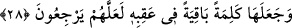
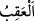

“Çünkü O, beni doğru yola iletecektir.” Onun için burada erteleme mânâsı ifâde
eden “sîn” getirilmiştir. Hâlbuki “Beni yaratan ve bana yol gösteren O’dur” (eş-Şuarâ
26/78) âyetinde erteleme mânâsı ifâde eden “sîn” getirmemiştir. Daha uygun olanı
burada “sîn” harfinin erteleme değil te’kid ifâde etmesidir. Muzari kalıbı ise bu
hidâyetin şimdi ve gelecekte devam edeceğine delâlet etmektedir.
28. Bu sözü, ardından geleceklere devamlı kalacak bir miras olarak bıraktı ki,
insanlar (onun dînine) dönsünler.
İbrâhim “bu sözü” yani Allah’tan başka bütün mabûd ve putlardan uzak olacağı
sözünü “ardından geleceklere” zürriyetine “devamlı kalacak bir mîras olarak
bıraktı,” bu sözü onlara vasiyet etti “ki insanlar (onun dînine) dönsünler.”
Bahsedilen söz, İbrâhim (a.s.)’ın “Ben sizin taptıklarınızdan uzağım. Ben yalnız beni
yaratana taparım. Çünkü o bana doğru yolu gösterecek” cümlelerinden ibâret olan
tevhid sözüdür. Bu da Allah’tan başka bütün mâbudlardan uzak olmak, ibâdete yegâne
hak sahibi olan Allah’ı birlemek ve Allah’tan başka hiçbir ilah olmadığını ikrar etmek
sözüdür. İşte Hazreti İbrâhim, zürriyetine ve nesline bunu vasiyet etmiştir. Şu âyette
ifâde edildiği gibi: “İbrahim de bunu kendi oğullarına vasiyet etti, Yakup da:
«Oğullarım, Allah sizin için o dîni seçti, bundan dolayı sadece Müslümanlar
olarak ölünüz» dedi .” (el-Bakara, 2/132)
Bahse konu olan bu sözü, İbrâhim (a.s.) Nemrud’un ateşinden sağ sâlim çıkıp
kurtuluşundan sonra söylemiştir. Bu sözün, ardından gelen nesillerinde kalıcı bir söz
yapılması İbrahim (a.s.)’ın yetişip büyümesinden sonradır. Artık İbrâhim (a.s.)’ın
ardından, nesilden nesile Allah’ı birleyip O’nun birliğine dâvet edenler kıyâmete kadar
devam edecektir.
Râgıb şöyle demiştir: “
/akıb” kişinin topuğudur. Mecâzen evlâd ve torun için
kullanılmıştır. Buna göre kişinin akıbi, gerek erkek ve kız çocukları gerek bunların
çocuklarıdır. Ecnâs-ı nâtifî’de olduğu gibi “akıb”in kişinin erkek evladı olduğu, yine
bazı fukahâdan nakledildiği gibi “akıb”in kişinin kız çocukları olduğu konusu yani her
iki görüş de cidden pek zayıftır. Bu, lügat bilgilerine muhâlif olup güvensizdir.
“İnsanlar (onun dînine) dönsünler” ifâdesi, İbrâhim (a.s.)’ın tevhid sözünü kalıcı
yapmasının illetidir. Bu dönüşün onlara isnâd edilmesi ise “bir şeyin hepsini o şeyin
çoğunluğu ile sıfatlamak” kabilindendir. Buradaki ümid mânâsında olan “tereccî” ise
İbrâhim (a.s.)’a râcîdir. Yani İbrâhim (a.s.), müşrik olanların, müvahhid olanların dâveti
sayesinde tevhid sözüne dönmeleri ümidiyle bu tevhid sözünü ardından gelecek
nesillerinde kalıcı yapmıştır.
Bazıları Hz. Ali’nin “kerremellahu vecheh” yani “Allah onun yüzünü ve zâtını şerefli